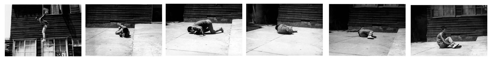

Why does this website look like shit?

In 1973, artist Tehching Hsieh performed his 'jump piece', jumping out of a second-story window in Taiwan, and breaking both of his ankles on the concrete.
You may be wondering why this website looks like this.
Why doesn't is look like 'regular' websites?
Maybe you find yourself thinking:
'Sure, it used to be okay for websites to look like that, but not anymore. Websites need to look professional.
They need to look normal'
I am tired.
I'm tried of things being regular.
I am tired of there bring a 'right' way to do things.
I'm tired of everything moving towards a single, familiar style.
I'm tired of everyone putting the creative control of their creations in the hands of increasingly automated, external tools.
'Use this website builder service to make this website and it can look just like a 'real' website!'
'Follow these guildlines and your films will look professional!
'Use this ai generaor to make your movie for you and it can look just like a 'real' movie and you won't have to think about anything!'
Fuck all that
And if you disagree with me. Fuck you too.
What happened to shit being different?
Shit being weird?
Shit that was actually exciting to experience!
What the fuck happened to the weird way something is made being worn as a badge of honour?
What happened to punk fucking rock?
What happened to expressing yourself though your art?
And you could say:
'Relax dude, it's just your website. Why not make the website a simple way and focus on making films?
Because this is something I'm making, and I want to make it myself, and so I want it to look like a way that feels interesting and exciting to me.
I want it to look like an expression of my skills and resources, regardless of what those skills and resources are
And it's not that everything need to look janky and poorly made.
Some things should look professional, and that's fine
But when did that become the default?
When did
anyting become the default?
What happened to thinking about what you want make and making intentional creatives choices for all it's elements to bring that vision to life?
It seems most people just want to cut the thinking out of as many parts of the creative process as possible.
So they just follow the default without even thinking.
Don't you want your creation to be an expression of yourself?
Or do you just want it to be popular?
There are enough creatives just wanting to be popular. We don't need you trying to do that too.
Honestly I don't think I can explain this in a way that will instantly convert anyone to agreeing with me. And I don't mean that as 'I'm so smart you just don't get it'.
I just know that ideas don't work like that in anyones minds.
But maybe it will help someone to thinking and creating in more interesting ways
- theodore